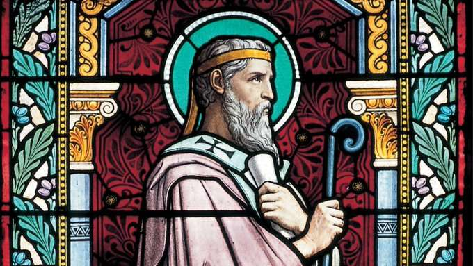

21 janvier 2022 CITÉ DU VATICAN – Le pape François a officiellement déclaré vendredi saint Irénée de Lyon 37e docteur de l'Église, avec le titre de «Doctor Unitatis» («Docteur de l'unité»). [Traduction française d’un article en anglais mis en ligne sur le site du National Catholic Register, sous le titre « Pope Francis Declares St. Irenaeus ‘Doctor of Unity’ »].
Le saint est le premier martyr à être déclaré docteur de l'Église. « Puisse la doctrine d'un si grand Maître encourager de plus en plus le chemin de tous les disciples du Seigneur vers la pleine communion », a écrit le Pape dans un décret signé le 21 janvier. Le Pape a signé le décret à mi-parcours de la Semaine de prière pour l'unité des chrétiens, qui se tient entre le 18 et le 25 janvier. « St. Irénée de Lyon, venu d'Orient, a exercé son ministère épiscopal en Occident: il a été un pont spirituel et théologique entre les chrétiens d'Orient et d'Occident », a écrit le pape François. Son nom, Irénée, exprime cette paix qui vient du Seigneur et qui réconcilie, rétablit l'unité. » Saint Irénée est un évêque et écrivain du IIe siècle vénéré par les catholiques et les chrétiens orthodoxes et connu pour réfuter les hérésies du gnosticisme en défendant à la fois l'humanité et la divinité du Christ.
Bien que certains des écrits les plus importants de saint Irénée aient survécu, les détails de sa vie ne sont pas aussi bien conservés. Il est né dans la moitié orientale de l'Empire romain, probablement dans la ville côtière de Smyrne, dans l'actuelle Turquie, vers l'an 140 après J.C. Jeune homme, il entendit la prédication du premier évêque chrétien, saint Polycarpe, qui avait été personnellement instruit par l'apôtre Jean. Irénée est devenu prêtre, au service de l'Église dans la région de la Gaule, actuelle France, au cours d'une période difficile, à la fin des années 170. Pendant cette période de persécution par l'État et de controverse doctrinale, Irénée fut envoyé à Rome pour communiquer au pape Saint-Éleuthère une lettre sur le mouvement hérétique connu sous le nom de montanisme. Après son retour à Lyon, Irénée est devenu le deuxième évêque de la ville, après le martyre de son prédécesseur Saint Pothin. Au cours de son travail de pasteur et d'évangélisateur, le deuxième évêque de Lyon s'est heurté à des doctrines et à des mouvements hérétiques qui insistaient sur le fait que le monde matériel était mauvais et ne faisait pas partie du plan originel de Dieu. Irénée a reconnu dans ce mouvement, sous toutes ses formes, une attaque directe contre la foi catholique. Il a réfuté les erreurs gnostiques dans son long ouvrage « Contre les hérésies », qui est encore étudié aujourd'hui pour sa valeur historique et ses idées théologiques. Un ouvrage plus court, « Démonstration de la prédication apostolique », contient la présentation de l'Évangile par Irénée avec accent mis sur l'accomplissement par Jésus-Christ des prophéties de l'Ancien Testament. Plusieurs de ses autres œuvres sont aujourd’hui perdues, bien qu'une collection de certaines parties d'entre elles ait été rassemblée et traduite. Irénée mourut à Lyon vers 202, lorsque l'empereur Septime Sévère ordonna le martyre des chrétiens. Les évêques américains ont voté en 2019 en faveur de la nomination de saint Irénée comme docteur de l'Église à la demande du cardinal Philippe Barbarin, alors archevêque de Lyon, et ils ont envoyé leur approbation au Vatican pour qu’elle soit examinée par le pape. Le pape François avait précédemment déclaré saint Grégoire de Narek, un moine arménien du Xe siècle, docteur de l'Église, en 2015. En 2012. Benoît XVI a proclamé Saints Jean d'Avila et Hildegarde de Bingen docteurs de l'Église. Dix-sept des 36 personnalités déclarées docteurs de l'Église par l'Église catholique ont vécu avant le Grand Schisme de 1054 et sont également vénérées par les chrétiens orthodoxes.
Traduction française: M.R. Macina, mise en ligne sur le site Academia.edu, le 23.01.22/